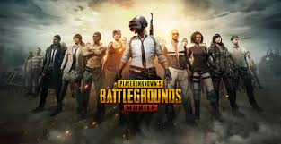
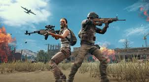
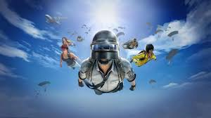
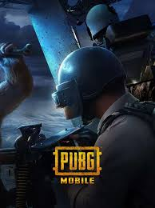

Ця людина створила дуже популярну гру Pubg.
Мені також ця гра дуже подобається томущо це стрелялка а такі ігри дуже красиві. Ще в цій грі можно безкоштовно завантажити ще дуже багато режимів наприклад мій наюлюбленіший це метро не вважаючі просто гру. Плюси ця гра безкоштовна багато режимів та я дуже здивувався томущо там є автомобілі та літаки, багато зброї. Мінуси багато реклами та донатана щястя все. Я дуже рекомендую вам пограти в цю гру. Там є фільтр скина но не можна додавати чи робити інший скін якщо ти його не вибив з ящика або купив. Та розробник цієї гри зробив офіціальний сайт , щоб легко звертатися до підтримки або скачати 100 відсотків оригінальний Pubg. Ось сика на їхній сайт.
PubgТа ось декілька картинок з цієї гри.
Якщо ти не хочеш вибирати карт то ти можеш зробити режим рандомна карта. Також там є рейтингові режими та нерейтингові. До Рейтингових належать Санук,Лівік,рандомнаа карта, нуса,викенди,тіратар. До безрейтингових належать Метро та всі які були в рейтингових. Ще є Тир чудес там можно поміняти наприклад з них 2 на 2, 200 патронів у кожного ігрока,єдине оружие 1 на 1 , та є всі оружия, квест комната ,прятки ,зомби, паркур, Бій насмерть на вибивание, головоломки,соло арена, оружейная гонка,дракула 2 на 2 ,дракула 1на1. Безрейтинговий відрізняється від рейтингова тим ,що рейтинговий якщо ти там дуже будеш круто грати то тебе зможуть розробники визвати в кібер спортсмени щоб ти грав з дуже популярними людьми в пабге та якщо виграти чемпионат мира то можно получить дуже багато грошей і станеш популярним , а безрейрейтинговий якщо ти там будеш дуже гарно грати то тебе не зможуть визвати на кібер спорт і ти не зможеш стати популярним і не зможешш грати з професіоналами та про тебе ніхто не буде знати, а тир чудес потрібен Щоб розрізнити твою гру щоб тобі не було скучно. Та коли я пограв в ці всі режими то мені сподобався Санук, 1 на 1 , Випадкова карта , коли 200 патрнів, та 2 на 2,та я не знаю навіщо деякі люди просто копіюють карти інших людей.
  В пабг на сьогоднішній момент грають 400 мільйонів людей. В 2024 в чемпіонаті пабг дали переможцям 15 863 360 доларів найбільший призовий фонд в історії пабгу було 24 859 356 доларів це було в 2022 році.